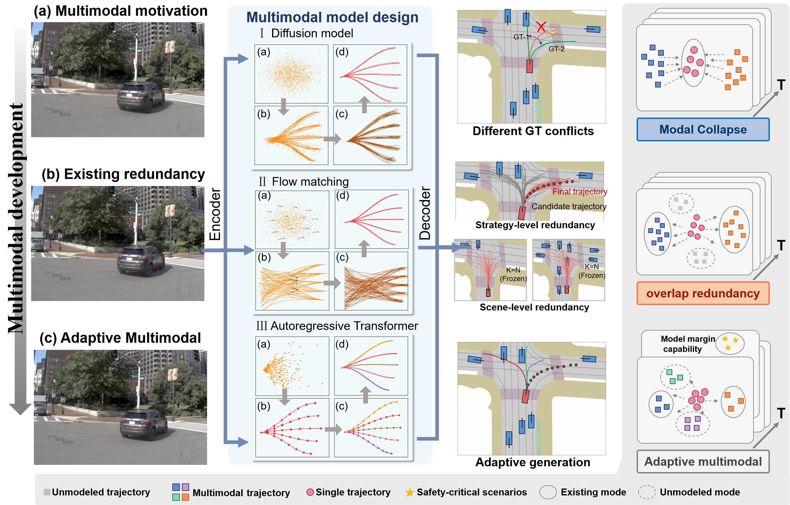
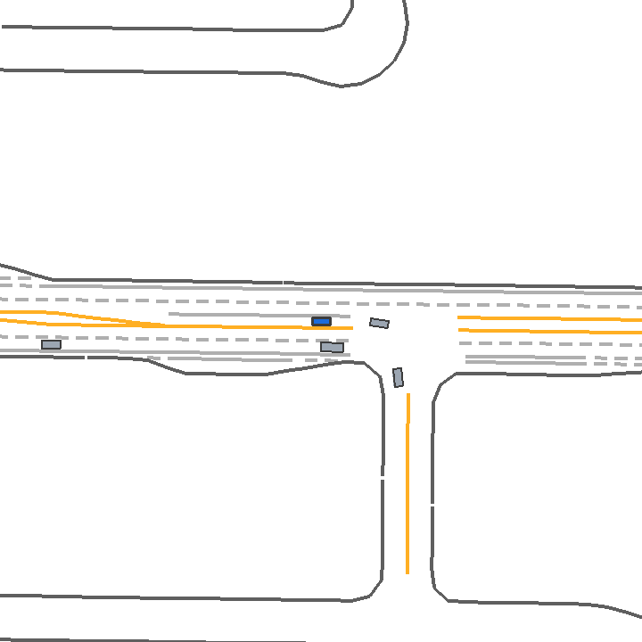

Research Project Page
How Many Futures Are Enough? Learning Redundancy-Aware Effective Multimodality for End-to-End Autonomous Driving with Action-Conditioned Predictive Representations
Overview
Scene-adaptive capacity for decision-relevant driving futures.
Abstract
Multimodal planning has become central to end-to-end autonomous driving because a scene may admit several plausible actions, whereas their conditional average can correspond to none of them. Recent methods have substantially improved the generation and selection of multimodal trajectories, but many practical systems still treat the candidate count as a predefined modeling choice. In reality, the number of decision-relevant alternatives is scene dependent, and multiple trajectories may be geometric variations of nearly interchangeable driving behavior. We study this discrepancy through effective multimodality: the scene-dependent capacity needed to preserve distinct planning choices without allocating proposals to redundant outcomes. We introduce a geometry-proposes, predictive-representations-verify framework for estimating this capacity. Trajectory geometry first identifies candidate pairs that are likely redundant. A frozen action-conditioned predictive model then rolls each candidate forward over multiple latent horizons, providing conditional future-consequence evidence for detecting geometrically similar proposals that should not be merged. A lightweight relation verifier converts this evidence into pairwise redundancy decisions that can support subsequent scene-adaptive representative selection. On held-out redundancy evaluation, multi-horizon predictive evidence rejects 17.6% of geometry-induced false merges while retaining 95% of truly redundant pairs, and 27.7% at 90% retention. These results suggest that predictive representations are most useful not as a universal trajectory metric, but as targeted evidence for distinctions that geometry alone cannot resolve.

Qualitative Demos
Representative scenario-generation and policy-control cases.
Scenario Generation
Logged interactions and their corresponding AMC-generated high-risk variants.


Policy Rollouts
Nominal-only TD3 and risk-gated residual TD3 under matched scenario conditions.


